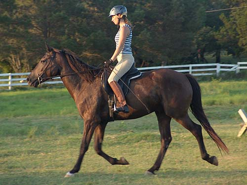

Working with Miaren
at home I've been on Miaren a couple
of time walk/trot since he came
back home from the parents.
I asked Emily to come out so we
could get some pictures.
It took them a little bit to get used to each
other, but then they did
well together.
Emily lunged both directions
just to get a feel for Miaren.
With no side reins,
he kept his nose poked out.
He did start to relax
and reach over his back a little more.
(it was so hot that I hosed
him before we started)
There was a bit of bounding
at the canter.
Since we weren't doing
much lunging, we just hooked under the bit.
I helped by holding
her stirrup, and Miaren was fine with a stranger mounting up.
Getting used to each
other.
Emily is used to more contact.
Miaren is used to less, so they had to come to an agreement.
They did a number of
walk/halt transitions to get used to each other.
Miaren has a nice walk
when everyone is relaxed.
It took a little while
before he started listening to her legs for bending. At first he was paying
more attention to his mouth, but when she gave him more rein, she discovered
he's good about bending and going where she asked.
They both had a little
tension when they picked up the trot. Miaren would open up his mouth when
he didn't like the bit pressure, but he never threw a fit, and was pretty
polite about things.
There was some popping
of the shoulder and they did leave the 'arena' one time. Emily prepared
for that corner better the next time, and they stayed in from then on.
When she'd take contact
like he was a grown up horse, there was resistance.
Mostly he did some mouthing
of the bit.
We'll probably use the
lunge line to get some more lifting through his back.
Walking through the
trot poles. He didn't step on them, and didn't get worried.
Over the cavelletti
and careful.
They both seem pleased
with themselves. I can't wait for him to look like this on a regular basis.
Offering a hop over.
He's always been one to jump things.
His trot is light and
airy to ride. It feels like something that you could ride all day with
no effort.

Towards the end, going
downhill, the head would still go up, but Emily had a softer hold, so no
gaping mouth. It's going to take time to get the muscle on the top of the
neck. Still, he was nice enough that we think he'll do some cantering next
ride.